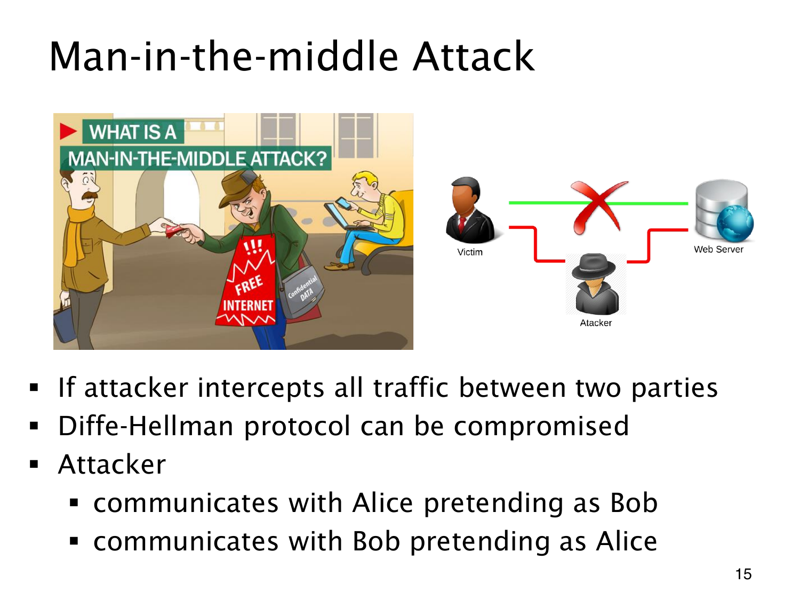

L1.14 · 第 15 页讲解原文
查看这一页课件

替换公开值，就能把交换拆成两段
未经认证的 Diffie–Hellman 中，攻击者可以拦下 Alice 的公开值，换成自己的值交给 Bob；再对 Bob 发往 Alice 的值作同样替换。
Alice 由此与攻击者建立一个共享值，Bob 与攻击者建立另一个。双方仍以为正在直接与彼此通信，攻击者却知道两边的秘密，可以在一边解密、读取或改写，再用另一边的密钥加密转发。
这就是 man-in-the-middle attack（中间人攻击）。攻击者具有拦截、替换和转发能力；图中红色路径将原连接拆成“用户—攻击者”和“攻击者—服务器”两段，直接路径被阻断。
它无需反求 Alice、Bob 的私密指数，也无需破解离散对数，漏洞在于公开值没有绑定到正确身份。被动窃听下的计算困难性不能保证抵挡主动攻击。阻止这类替换，需要可验证的签名或其他已有信任关系来认证信息与身份；仅增大模数不能补上这一环。